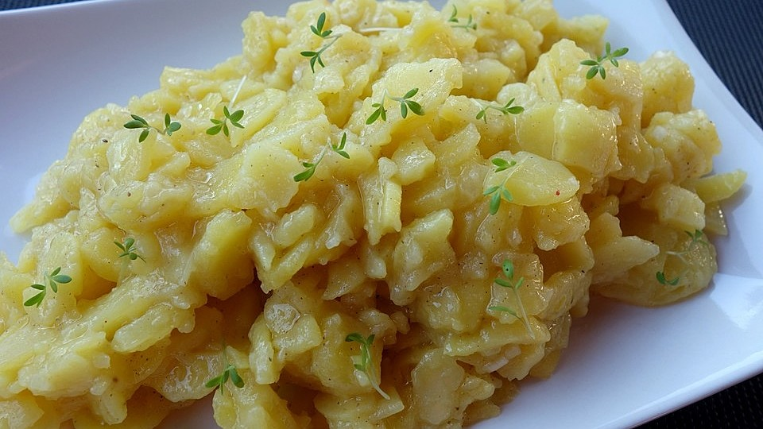

Swabian Potato Salad

Description
Swabian potato salad is one of the iconic dishes you will find
all over Swabia. It is made with broth and mustard instead of mayonnaise.
There is a constant feud between north and south germany, as the north tends to use mayonnaise
while the south despises mayonnaise in potato salads. Choose your side wisely!
Don't panic, it's super easy! You just have to take your time in the beginning.
And yes as with all real swabian recipes, there are no measures. Just wing it and try it out, there is no right or wrong :)
Make sure you carry a towl with you!
Ingredients
- As many potatos as you wish, but make sure you've got a waxy variety
- between 500 ml and 1L Broth (I use vegetable broth, but traditionally it would be made with bone broth)
- Onions
- Salt
- Pepper
- Oil
- Vinegar
- Mustard
Steps
- Cook the potatoes with skin on.
- As soon as the potatoes are cooked through, drain them and let them cook for a few minutes
- Remove the skin. This can be done by simply scraping it off with a butter knife. Make sure not to burn yourself! You can use a towl to hold the potato.
- Cut the potatoes in thin disks, right into a big bowl
- Add salt, pepper, mustard, oil and vinegar to your taste.
- Add the btorth, but make sure to add just a bit at a time and then mix the potato salad gently inbetween.
The salad sould be very creamy in the end. Add seasoning as you go.
- Let the potato salad sit for a few minutes so it can soak up some of the remaining liquid to become even creamier. However, don't let it sit for too long because it's best enjoyed warm!
- ENJOY!